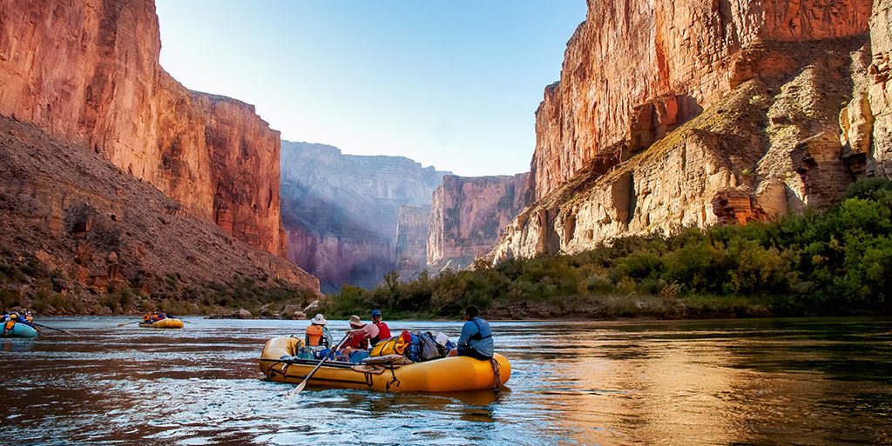

If you are looking to have a great adventure, while exporing the local area scenery, you came to the right place.
With Wet Paddle Adventures, you can experience the Animas River whether on a raft or in a kayak.
No matter your experience level, you are sure to have a great adventure!

Wet Paddle Rafting Adventures
Package Details
1

2

3

4

5
6